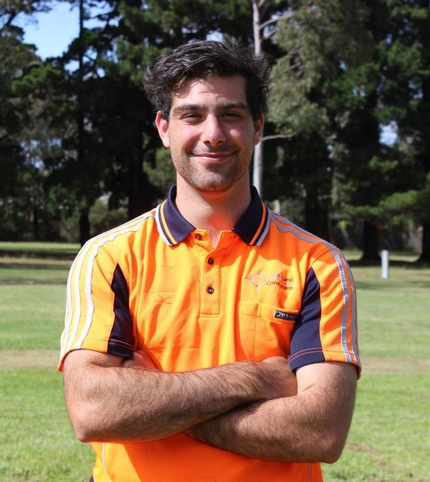

Geoportfolio
David Maddox
About
This website is the geoportfolio of David Maddox. The website entails
information that is academically and profesionally related to the field of geospatial science
A brief introduction about myself is that I am born and raised in Melbourne, Australia and as of November 2024, I am in my fourth and final year of the
Bachelor of Science (Geospatial Science) (Honours) course. My geospatial-related interests is working with the tools that capture the geosptial data that
is used within the industry. I have completed the Diploma and Advanced Diploma in Surveying and have worked as both a cadastral and construction surveyor
throughout my studies which has linked to my course directly.
My own personal hobbies include sports and going remote with my car. My sports currently are cricket, footy and golf.

Academic Portfolio Overview
Cartography
Cartography consists of creating maps using spatial data obtained from sources such as publicly online government data and population numbers from the Australian
Bureau of Statistics (ABS). The significant practicals completed in Cartography 2 involved the production of three maps of the student's choice based on a specific topic:
- Practical 2: Map directed at a target audience of choice using provided data of Melbourne City
- Practical 3: Thematic mapping of a demographic's population using data from the Australian Bureau of Statistics (ABS)
- Final Cartography Map: Free-choice on topic
Below are the three maps that I have created as part of my course:
Note: If map display is too small, right-click the image and 'Open in new tab' to allow zooming of the map.
Melbourne Map: A map showing the spatial aspect of how the average income in Victoria is spread out
Melbourne Map: A map working out how the Australian aboriginal popukation have congregated across Vicotria
Melbourne Map: All key locations in Melbourne City compared to the key laneways
Spatial Information Science Principles
The course extends prior knowledge on Geographic Information Science's and introduces the principles of spatial data analysis and using GIS to perform
DEM-based terrain anaysis, network-based accesibility analysis and location-based multicriteria evaluation with real world applications. The following are 2 of the
key assessments across the year.
- Terrain Visulisation
- Network Visuliation
- Major Group Project
During the course one of keys was completing DEM-Based Terain analysis, a network-based Visulisation of a critera chosing in class and the Final
map for the group project.
- Map showing the terrain of the Gardiner catchment using a DEM dataset
- Map showing the spatial accessibility of areas within a suburb for Primary Schools
- Final map of the major class group project of a propsed dam in the Licola Valley
The first map is a full map with a legend and description which shows the terrain of the area around the Gardiner Catchment and was completed
using a DEM dataset. The second map was a Visulisation of how accessibile primary schools are from every location in a suburb. This is done using
network-based analysis. The final map in the portfolio is an aspect in the report showing the locations of the dams overlayed on a datset showing
the elevation changes within the high country of Victoria around the Licola area. The 3 circles shown on the map are showing the location of possible
dams based on criteria including population, expected hydro-electric output and plausiblilty of the site.
Note: If map display is too small, right-click the image and 'Open in new tab' to allow zooming of the map.
Class Maps Below
Major Group Project Map
Industry Experience
This page will briefly cover all my work experience (as of September 2024) within the geospatial science/surveying industry. The two main companies that I have worked at
are JCA Land Consultats and now currently Absolute Surveying. This page will outline my experience gained and skills I have learned from working at these comapnies that is relevant to my industry.
Absolute Surveying
Cadastral and Construction Surveyor
July 2023 - Current
My placement was completed at Absolute Surveying. I have worked as a party leader and survey assistant, so I have gathered a diverse understanding of the industry. Absolute Surveying are one
of the largest surveying companies within Vicotria and completed cadastral, construction and geospatial works which ties in directly to my Uni course but also the future industry I wish to work in.
Through my time at Absolute I have worked in all these areas and have gathered an in depth understanding of how these jobs work from client ideas to finished deliverables and have been apart of each process.
These jobs included cadastral surveying, construction set outs and laser scanning + a small overview of drone work. The cadastral work I have completed is Re-Establishments, Feature surveys and As-builts.
The Re-Establishments I have completed have been done under the direct supervision of a Licensed Surveyor and have given me the understanding of how the planning processes and permit stages of construction
begin and why certain aspects of the field and office works are important such as closing, rotations onto MGA and picking up the correct occupation and marks in order to make the process in the office as
smooth and hassle free as possible. The feature work links into my Geospatial course well as the data capture being completed with Total Stations and Laser scanners allow me to look at the data and point
clouds and learn how to reduce, analyse and turn the maps/plans into deliverables for clients which is a key part of every stage in Surveying and Geospatial industry. As-builts area another broad aspect
of the industry which is a feature survey of a newly built structure or area and allows the people with the plans and or permits to figure out what has been built and how it compares to the plans.
Construction Setout’s are another aspect I have learned at absolute and links into my geospatial course with more of a focus on accuracy. Construction setouts I have completed include screw piles, columns,
building grid lines, building extent lines, walls, plumbing penetrations and lift core extents just to name a few. Moving away from the calm environment of cadastral work to the deadline and pressure-oriented
construction has given me valuable experience of working with more reliance on your work being completed well and on time and link closely with my course and industry in that way. Being able to say I have worked
under pressure and completed my task well and on time is a key to leaving uni with valuable real-world experience.
The final area of works at Absolute I have completed are more geospatial works. These include more laser scanning and drone work, and I have learnt when these types of styles of data capture are the best
and most efficient way to work when compared to using the total station. These styles also have a different aspect when I come to post processing and normally take a longer time due to the larger number of
points and clouds which is valuable to understand and learn so when I come into contact with these types of data in my post uni career in the best position to work with it.
The experiences and works have allowed me to work with different types of data, different styles of data capture, different aspects of surveying and working in different pressure environments.
Coming out of uni with 5 years’ experience (2 in the RPL) is a key to have set a fantastic foundation for my career and with the works being so broad and being relied on to work solo and completed
tasks under pressure my ‘placement’ has been a success.
Skills and Proficiencies
 |
GIS |
 |
QGIS |
 |
Cartographic Principles |
 |
Adobe Illustrator |
 |
Remote Sensing |
 |
Photogrammetry and Drone Mapping |
 |
Web Design: HTML & CSS |
 |
Web GIS |
 |
Python Programming |
 |
SQL Database Management |
Credits and Attributions
The following programming languages and software were used to create the website
- HTML
- CSS
- JavaScript
- Visual Studio Basic
The deliverables contains content from the following subjects:
- Cartography 2 (GEOM2079)
- Spatial Information Science Principles (GEOM1044))
Special thanks to the following people who have helped me make this website with their expertise and guidance:
As per the policy of using the Flaticons with a free account, the attributions and crediting of the creators of the icons are as below:
Attributions of icons used: